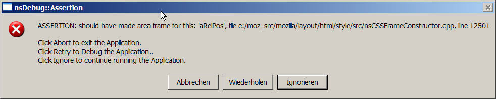

Asserts
- They are similiar to stack traces only here a developer thought that the condition should never be met, so it's time to inform her/him.

- You press the
Retry (Wiederholen) Button
- Then the procedure will be the same as for stack traces
- Search bugzilla for the text of the assertion
- Look up the cvs blame in lxr.mozilla.org for the assertion and the caller of the function where the assert occures.